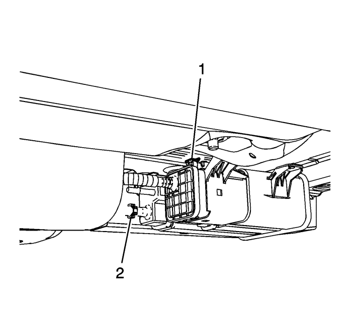
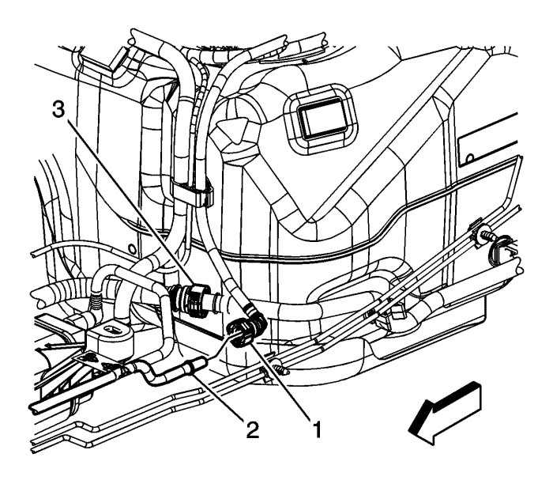
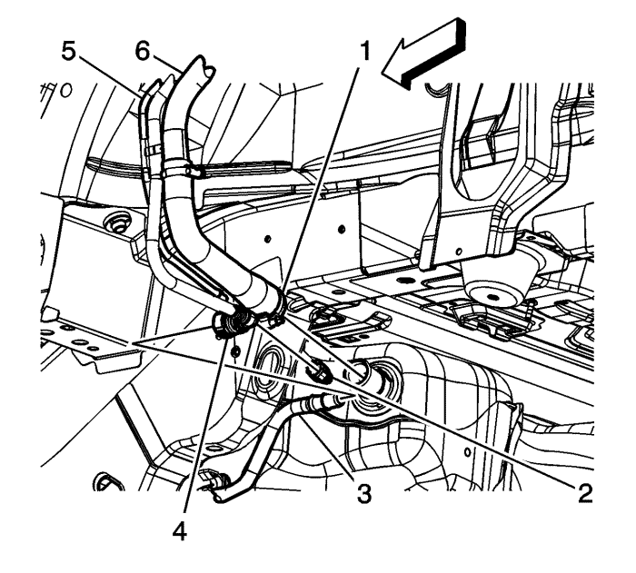
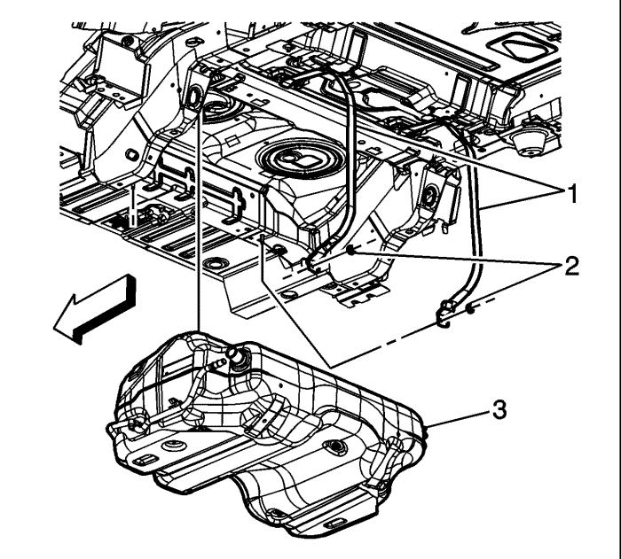
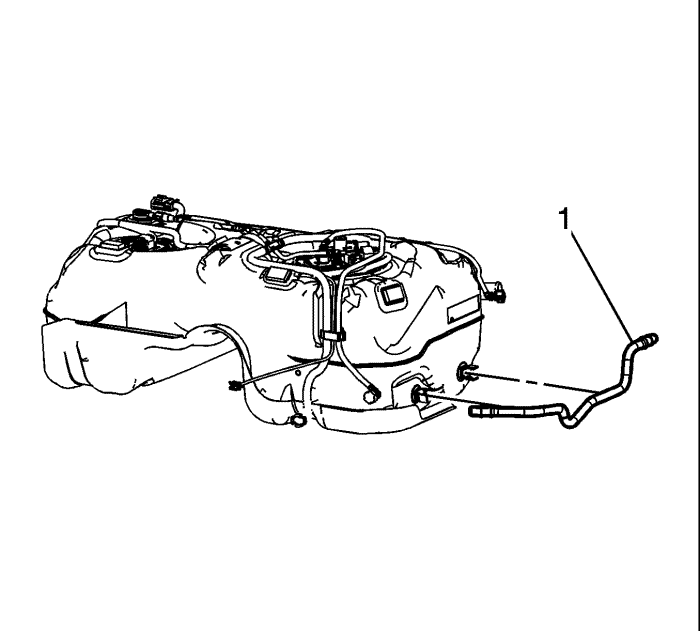
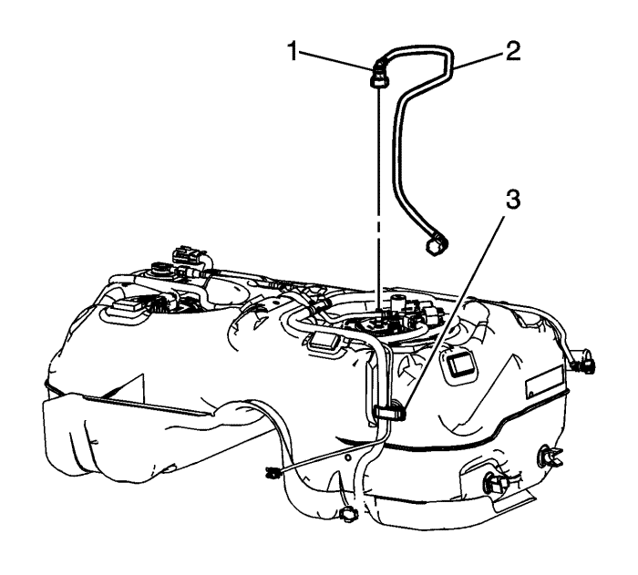
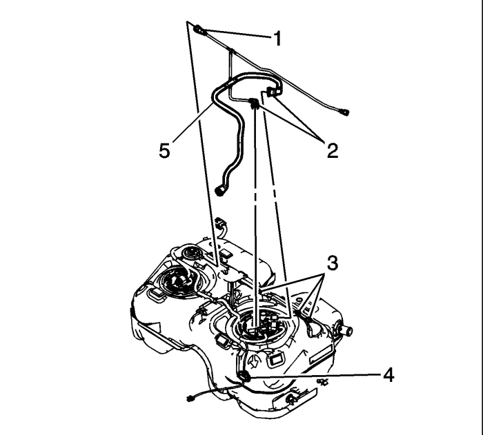
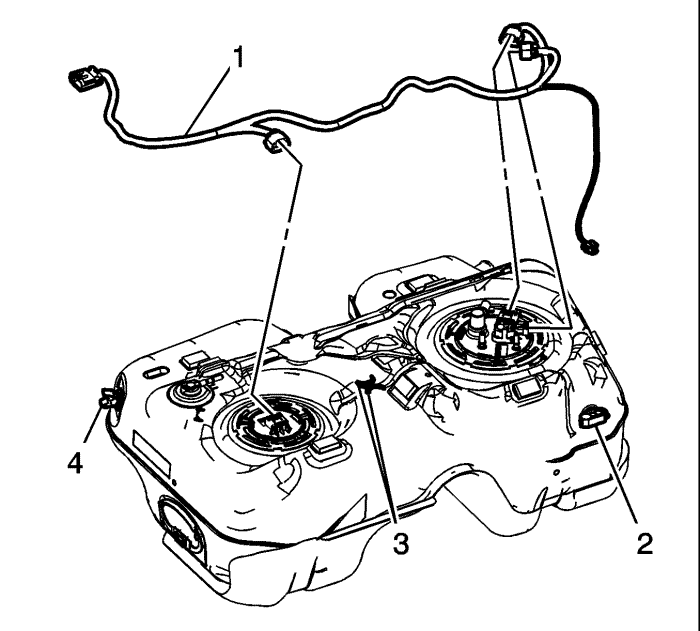
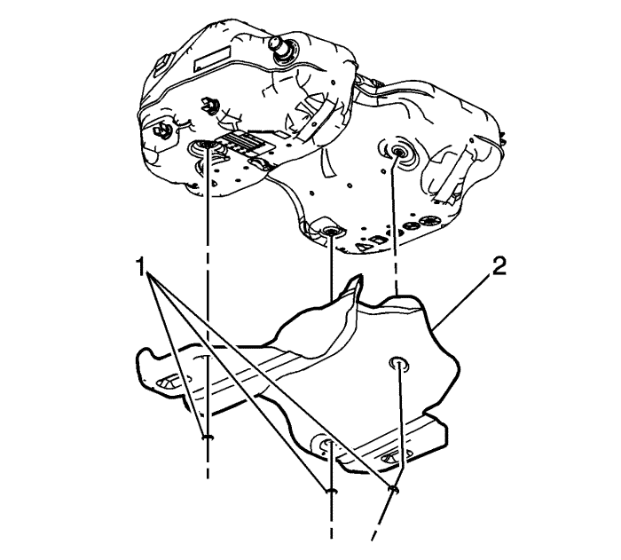
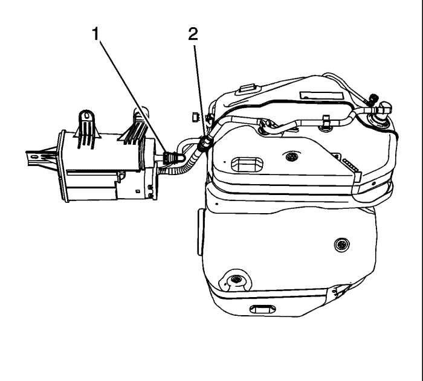

Sustitución del depósito de combustible — FWD (tracción delantera)
Procedimiento de desmontaje
Advertencia : No permita que nadie fume ni use llamas abiertas en la zona donde se esté trabajando con combustible o en el sistema EVAP. Cuando se esté haciendo cualquier trabajo en el sistema de combustible, desconecte el cable negativo de la batería, salvo en aquellas comprobaciones donde haga falta tensión de batería.
Advertencia : Las tuberías de alimentación de combustible permanecerán presurizadas durante largos periodos de tiempo después de que se apague el motor. Esta presión debe eliminarse antes de realizar tareas de servicio en el sistema de combustible.
- Asegúrese de que el nivel de combustible en el depósito sea inferior a 1/4. Si fuera necesario, vacíe el depósito de combustible hasta este nivel. Consultar Drenaje del depósito de combustible .
- Desconecte el cable de batería negativo. Consultar Desconexión y conexión del cable de batería negativo .
- Elevar el vehículo y soportarlo de manera adecuada. Consultar Elevación del vehículo con un gato .
- Desmonte el sistema de escape. Consultar Sustitución del silenciador de escape : NB5 .

- Desenchufe el conector eléctrico (1) del mazo de cables del depósito de combustible de la válvula solenoide de ventilación del cartucho EVAP.
- Desenganche la desconexión (2) rápida del tubo de aire fresco.

Advertencia : Siempre que se extraigan las tuberías de combustible, el combustible debe recogerse en un contenedor aprobado. La abertura del contenedor debe tener un diámetro mínimo de 300 mm (12 pulg.) para recoger el líquido adecuadamente.
Atención: Limpie todas las conexiones de los tubos de combustible y las zonas de alrededor antes de desacoplar los tubos de combustible para que no entre suciedad en el sistema de combustible.
- Desconecte del tubo de alimentación de combustible del chasis (2) el acoplamiento rápido (1) de la tubería de alimentación de combustible del depósito de combustible, si fuera necesario. Consultar Reparación del cierre rápido con collar de plástico .
- Desenganche la desconexión (3) rápida del tubo de aire fresco.

- Desconecte el adaptador de conexión rápida (4) del tubo de llenado de la línea de aire fresco del depósito de combustible (3). Consultar Reparación del cierre rápido con collar de plástico .
- Desconecte el empalme (2) de conexión rápida de la línea de vapor del depósito de combustible de la línea (5) de recirculación del tubo de llenado. Consultar Reparación del cierre rápido con collar de plástico .
- Afloje la abrazadera (1) del tubo flexible del tubo de llenado de combustible situada en el depósito de combustible.
- Quite, del depósito de combustible, el tubo flexible de llenado de combustible (6).

- Utilizando un gato regulable adecuado, apoye el depósito de combustible.
Atención: No doble las bridas del depósito de combustible. Al doblar las bridas del depósito de combustible se pueden dañar las bridas.
- Desmonte las tuercas (2) de la brida del depósito de combustible y de las bridas (1).
- Utilizando un gato regulable, baje lentamente y vuelva a colocar el depósito de combustible (3) para retirar el depósito del vehículo.
- Si está sustituyendo el depósito de combustible, lleve a cabo los pasos siguientes. En caso contrario, continúe con el procedimiento de instalación.
Procedimiento de desmontaje

- Desconecte la tubería (1) de aire fresco de los clips del depósito de combustible y retire la tubería del aire fresco.

- Desconecte el adaptador de conexión rápida de la tubería de alimentación de combustible (1) del módulo de la bomba de combustible del depósito de combustible. Consultar Reparación del cierre rápido con collar de plástico .
- Abra el clip de fijación (3) del depósito de combustible y extraiga la tubería de alimentación de combustible (2).

- Desconecte el adaptador de conexión rápida de la tubería de vapor (1) de la válvula de ventilación del depósito de combustible. Consultar Reparación del cierre rápido con collar de plástico .
- Desconecte los adaptadores de conexión rápida de la tubería de vapor (2) del módulo de la bomba de combustible del depósito de combustible. Consultar Reparación del cierre rápido con collar de plástico .
- Retire la tubería (5) de vapor del clip de sujeción (4) y los elementos (3) de retención moldeados en el depósito de combustible.

- Desenchufe los conectores eléctricos del mazo de cables del depósito de combustible (1) de los siguientes elementos:
| • | Módulo de la bomba del combustible del depósito de combustible principal |
| • | Sensor de presión del depósito de combustible |
| • | Módulo de la bomba del combustible del depósito de combustible secundario |
- Retire el mazo de cables del depósito de combustible de los clips (2 y 4) de sujeción y de los elementos (3) de retención moldeados en el depósito de combustible.

- Desmonte los elementos de retención (1) del blindaje del depósito de combustible y el blindaje (2).
- Desmonte los módulos de la bomba de combustible del depósito de combustible. Consultar Sustitución del módulo de la bomba del combustible del depósito de combustible y Sustitución del módulo de la bomba del combustible del depósito de combustible -Secundario .
Procedimiento de montaje
- Monte los módulos de la bomba de combustible del depósito de combustible. Consultar Sustitución del módulo de la bomba del combustible del depósito de combustible y Sustitución del módulo de la bomba del combustible del depósito de combustible -Secundario .
- Monte el blindaje del depósito de combustible (2) y los elementos de retención (1).
- Enchufe los conectores eléctricos del mazo de cables del depósito de combustible (1) en los siguientes elementos:
| • | Módulo de la bomba del combustible del depósito de combustible secundario |
| • | Sensor de presión del depósito de combustible |
| • | Módulo de la bomba del combustible del depósito de combustible principal |
- Monte el mazo de cables del depósito de combustible en los clips (2 y 4) de sujeción y de los elementos (3) de retención moldeados en el depósito de combustible.
- Coloque la tubería de vapor (5) en su posición y conecte el adaptador de conexión rápida (2) de la tubería de vapor al módulo de la bomba de combustible del depósito de combustible. Consultar Reparación del cierre rápido con collar de plástico .
- Conecte el adaptador de conexión rápida de la tubería de vapor (1) a la válvula de ventilación del depósito de combustible. Consultar Reparación del cierre rápido con collar de plástico .
- Monte la tubería de vapor en el clip (4) de sujeción y en los elementos (3) de retención moldeados en el depósito de combustible.
- Coloque la tubería de alimentación de combustible (2) en su posición y conecte el adaptador de conexión rápida (1) de la tubería de alimentación de combustible al módulo de la bomba de combustible del depósito de combustible. Consultar Reparación del cierre rápido con collar de plástico .
- Cierre el clic de fijación (3) en el depósito de combustible.
- Coloque la tubería (1) de aire fresco en los clips del depósito de combustible y monte la tubería de aire fresco.
Procedimiento de montaje
- Utilizando un gato regulable, levante lentamente y vuelva a colocar el depósito de combustible (3) para montar el depósito en el vehículo.
Precaución: Consulte Precaución con las fijaciones en la sección Prólogo
Atención: No doble las bridas del depósito de combustible. Al doblar las bridas del depósito de combustible se pueden dañar las bridas.
- Monte las bridas (1) y las tuercas (2) del depósito de combustible.
Apretar
Apriete las tuercas a 20 N·m (15 lib. pie).
- Retire el gato regulable de debajo del depósito de combustible.
Nota: Asegúrese de que la muesca del tubo flexible del tubo de llenado de combustible está alineada con la pestaña de localización del depósito de combustible.
- Monte el tubo flexible de llenado de combustible (6) en el depósito de combustible.
- Apriete la abrazadera (1) del tubo flexible del tubo de llenado de combustible situada en el depósito de combustible.
Apretar
Apriete la abrazadera a 5 N·m (44 lib. pulg.).
- Conecte el empalme (2) de conexión rápida de la línea de vapor del depósito de combustible a la línea (5) de recirculación del tubo de llenado. Consultar Reparación del cierre rápido con collar de plástico .
- Conecte el adaptador de conexión rápida (4) del tubo de llenado a la línea de aire fresco del depósito de combustible (3). Consultar Reparación del cierre rápido con collar de plástico .
- Conecte del tubo de alimentación de combustible del chasis (2) el acoplamiento rápido (1) de la tubería de alimentación de combustible del depósito de combustible. Consultar Reparación del cierre rápido con collar de plástico .
- Conecte la desconexión (3) rápida del tubo de aire fresco.
- Enchufe el conector eléctrico (1) del mazo de cables del depósito de combustible en la válvula solenoide de ventilación del cartucho EVAP.
- Conecte la desconexión (2) rápida del tubo de aire fresco.

- Conecte el adaptador de conexión rápida (2) de la línea de aire fresco del depósito EVAP a la línea de aire fresco del depósito de combustible. Consultar Reparación del cierre rápido con collar de plástico .
- Conecte el adaptador de conexión rápida (1) de la tubería de vapor del depósito de combustible al depósito EVAP. Consultar Reparación del cierre rápido con collar de plástico .
- Monte el sistema de escape. Consultar Sustitución del silenciador de escape : NB5 .
- Conecte el cable negativo de la batería. Consultar Desconexión y conexión del cable de batería negativo .
- Utilice el siguiente procedimiento para comprobar si hay fugas:
| • | Ponga en ON el encendido con el motor apagado durante 2 segundos. |
| • | Poner el encendido en OFF durante 10 segundos. |
| • | Ponga en marcha el encendido con el motor apagado. |
| • | Compruebe si existen pérdidas de combustible. |
| © Copyright Chevrolet Europe. All rights reserved |